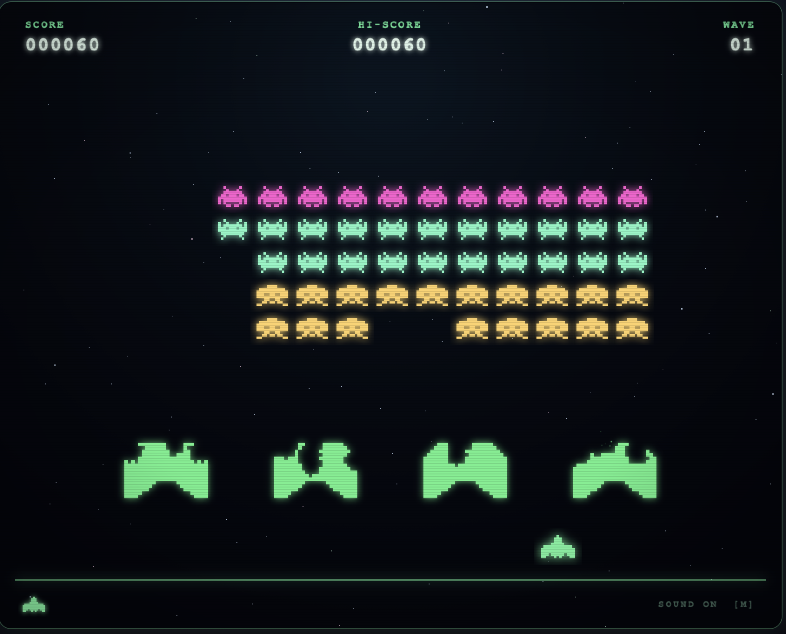
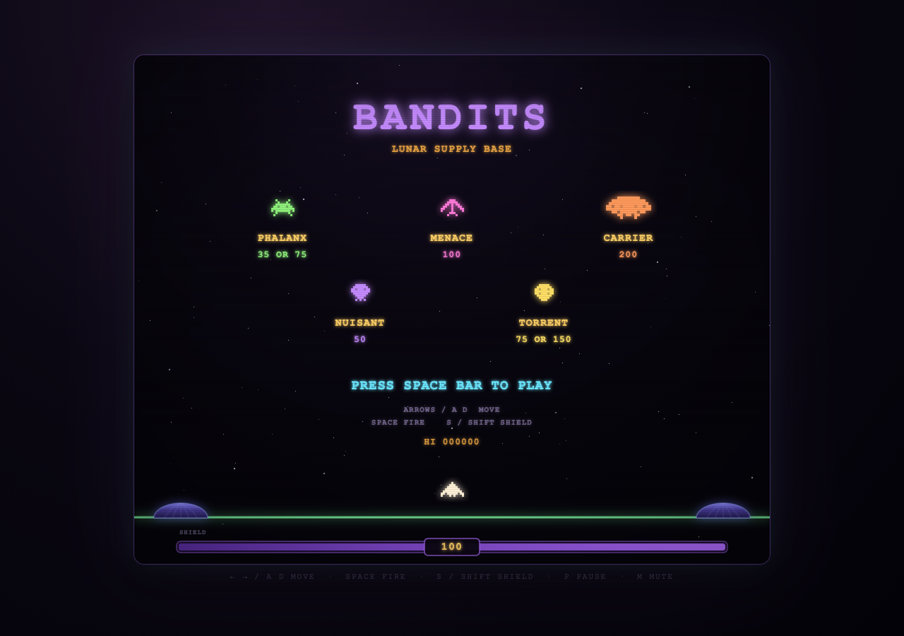
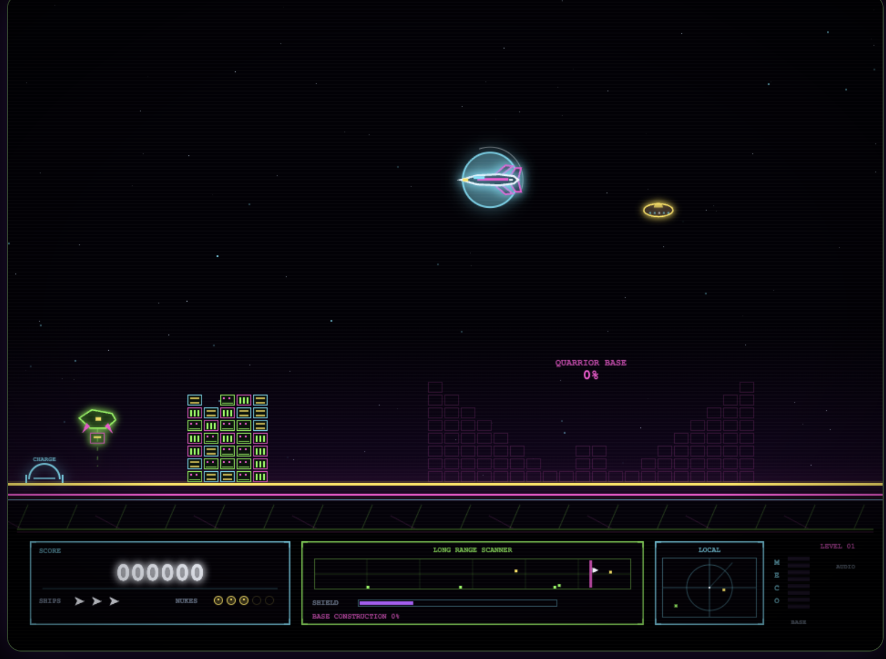
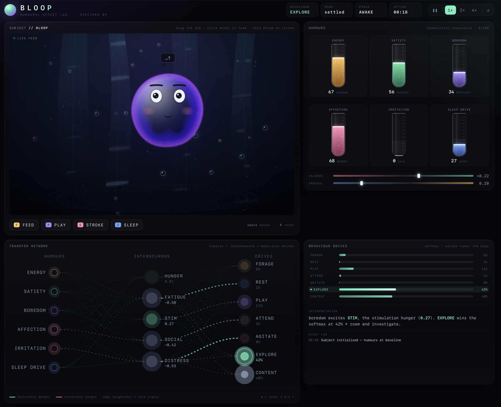

These games reconstruct four of my favourite games in plain old HTML and Javascript. Click a card to boot it.

01 ▶ PLAYThe original game, reconstructed with modern embellishments. I like to build Space Invaders every year using a different technology to stay in shape. This year is HTML+Javascript.

02 ▶ PLAYHold the depot against wave after wave of raiders trying to steal your diamonds. Bandits was a clone of Taito's Stratovox. This game is reconstructed as I remember it from the Apple ][.

03 ▶ PLAYThrust and steer over four ground bases while formations descend in waves. The invaders steal your city blocks and energy to create their own base. Finish the battle in the planet's core! This is a recreation of Repton as I recall it from the Apple ][.

04 ▶ OPENNot a score attack: a specimen with four humours drifting toward homeostasis. Feed it, play with it, let it sleep — valence and arousal decide what it does next. This simulator reconstructs the logic of the original Tamagotchi prototype from 1990.